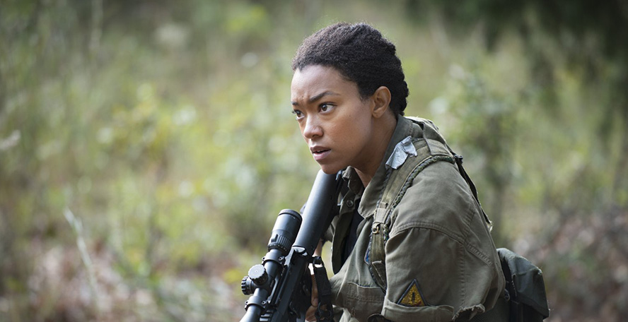
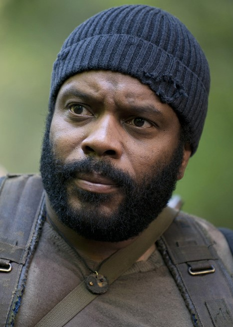
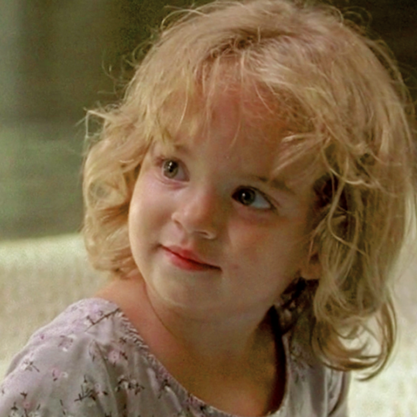
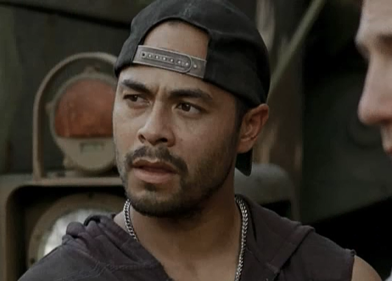
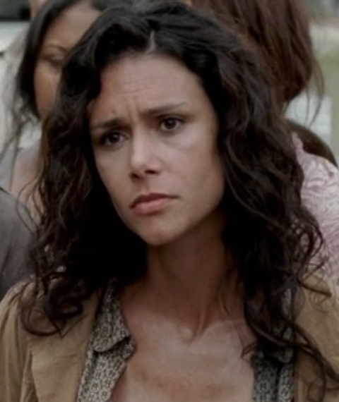
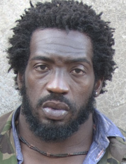
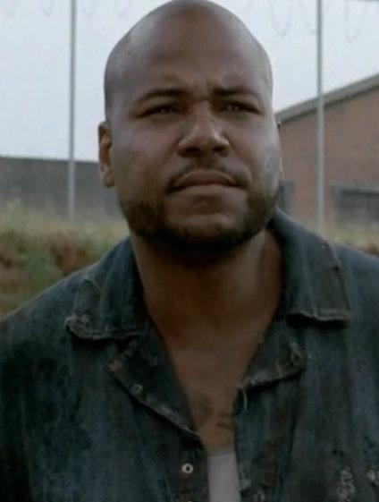

Sasha Williams
Sasha Williams is a main character and a survivor of the outbreak in AMC's The Walking Dead. A former firefighter before the apocalypse, Sasha belonged to a small group led by older brother Tyreese, trying to find a safe haven, and soon became one of the newcomers at the prison acting as a council member. After the downfall of the prison, she formed a relationship with fellow newcomer, Bob Stookey. After the deaths of Bob and Tyreese, she suffers from severe distress and PTSD, resulting in her isolating herself and refusing to invest in the community of Alexandria, believing its concept of trying to re-establish normal life to be false and an avoidance of the harsh reality of the apocalyptic world. Eventually, she comes to an acceptance of the community and wants to live and thrive following her grief. She forms a short but profound relationship with Abraham Ford in which she and the sergeant share common experience with PTSD and suicidal recklessness. Later on, Abraham is murdered by Negan, and Sasha takes Maggie to Hilltop and continued to reside there.
Tyreese Williams
Tyreese Williams, nicknamed Ty by many of his companions, is a main character and a survivor of the outbreak in AMC's The Walking Dead. He is the older brother of Sasha and was also the leader of a small group of survivors. He became one of the first newcomers at the prison. During his time at the prison, he formed a relationship with fellow Woodbury survivor, Karen. After Karen's death and the downfall of the prison, he became the primary caretaker of Judith Grimes and also Lizzie and Mika Samuels temporarily. A strong, yet compassionate, protective and unselfish individual, Tyreese struggles with his own morality while still managing to protect his group, often trying to prevent any bloodshed. He is shown to be wise, reasonable and thoughtful.
Philip "The Governor" Blake

Philip Blake, also known by his nickname "The Governor" and went briefly under the pseudonym of Brian Heriot, is a main character and an antagonist, as well as a survivor of the outbreak in AMC's The Walking Dead. He is the leader of the fortified town of Woodbury and later the leader of the River Camp. He serves as the primary antagonist of both Season 3 and the first half of Season 4.
Judith Grimes
Judith Grimes is a toddler who was born during the outbreak in AMC's The Walking Dead. She is the toddler daughter of Lori Grimes and the younger sister or half-sister to Carl Grimes. Due to the situation at her conception, Judith's biological father isn't certain; it could be either the series' protagonist, Rick Grimes, or the former group leader and antagonist, Shane Walsh. Regardless of Judith's real father, Rick has adopted her as his own and is willing to protect her at all costs.
Caesar Martinez
Caesar Martinez (always addressed by his last name) is a former antagonist and survivor of the outbreak in AMC's The Walking Dead. He is a member of the Woodbury army and is one of the Governor's most trusted allies. He served as an antagonist of Season 3. After Woodbury's downfall, he abandons The Governor and becomes the leader of another group of survivors.
Karen
Karen is a survivor of the outbreak in AMC's The Walking Dead. She is a resident of Woodbury and later a prison newcomer.
Shumpert
Shumpert (also known as the "Bowman") is an antagonist and survivor of the outbreak in AMC's The Walking Dead. He is a member of the Woodbury army, serving as one of the Governor's most trusted allies and an antagonist in Season 3.
Milton Mamet

Milton Mamet is a survivor of the outbreak in AMC's The Walking Dead. Milton is a resident of Woodbury. He is one of the Governor's most trusted allies and works as a researcher for Woodbury.
Axel

Axel is a survivor of the outbreak in AMC's The Walking Dead. He is a prisoner who survived the zombie outbreak along with Oscar, Big Tiny, Tomas, and Andrew. By his comments, he is rather poorly educated and a little ignorant, but he's also a generally well-meaning person.
Oscar
Oscar is a survivor of the outbreak in AMC's The Walking Dead. He survived the outbreak with Axel, Big Tiny, Tomas, and Andrew. He can be described as brave and honorable and is much nicer than the other prisoners, save for Axel and Big Tiny.
Allen

Allen is an antagonist and survivor of the outbreak in AMC's The Walking Dead. He initially belonged to the group of fellow survivor Tyreese Williams, with his wife, his son, and Tyreese's sister Sasha before becoming a member of the Woodbury Army.